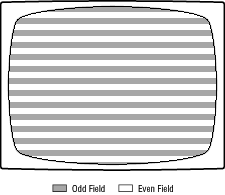
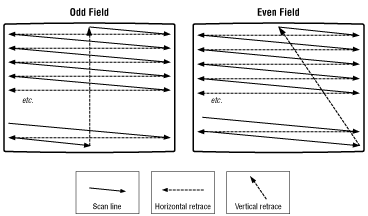

If you're an NTSC pro and already know the basics, you can skip the first part of this section and turn to 3DO NTSC Graphics.
An NTSC image is displayed with 525 scan lines of which the first 40 are invisible-used in old sets to warm up the electron guns for the new image. The 3DO system uses 480 of the remaining 485 scan lines to draw its images on the screen; 480 because the number works out well with a 320-by-240 resolution that is standard in computer graphics today.
To get rid of the flicker, NTSC divides each set of frame scan lines in half; each half-frame is called a field. The first field, called the odd field, contains all the odd-numbered scan lines (which are numbered starting from the top of the screen). The second field, called the even field, contains all the even-numbered scan lines. The two fields are interlaced as shown in Figure 1 to create a full frame.

Figure 1: NTSC fields.
An NTSC display draws fields on the screen at a rate of 60 fields per second, alternating between odd and even fields. The display rate surpasses 50 to 55 images per second, so the human eye sees flicker-free motion. And because the odd and even fields interlace to provide a full frame, the display still presents 30 frames per second.

Figure 2: NTSC scan pattern.
When the electron beams reach the bottom of the field (which can be either the odd or even field depending on the timing), they turn off once again and move to the top left of the next field's first scan line, where they start the scanning process over. The interval between the end of one field and the beginning of the next is called the vertical blank, another period when nothing is beamed onto the display screen.
Notice that scan lines aren't perfectly horizontal in Figure 2, but slightly slanted down as they move left. Notice too that the 525 frame lines are divided exactly in half, so each field gets 262.5 scan lines-hence the half-line in each frame in the figure. Although the figure shows the true physical nature of NTSC scan lines, for all practical purposes you can consider each scan line as perfectly horizontal and disregard half-lines; they're invisible in each frame and aren't used for drawing. Think of each field created by 3DO hardware as a set of 240 perfectly horizontal and full scan lines.
3DO NTSC Graphics
The 3DO graphics hardware takes best advantage of the NTSC standard by providing discrete color pixels of 320-by-240 resolution, NTSC's highest effective color resolution. 3DO graphics hardware also provides subpixels of 640 by 480, NTSC's highest effective intensity resolution (the electron guns in an NTSC display can change intensity twice as quickly as they can change color). As you'll read later, the 3DO hardware can divide up the colored pixels into subpixels and then smoothly average colors between the subpixels so the final result is a clear NTSC signal carrying a 640-by-480 image. That image is displayed in 480 scan lines, each of which can change in 640 discrete increments along the line.
The 640 lines in a typical 3DO frame are divided into odd and even fields, and alternately sent to the NTSC display. Although the resulting fields are slightly different (due to the smooth color grading), they merge together to create a single frame with 320-by-240 color resolution and 640-by-480 contrast resolution.